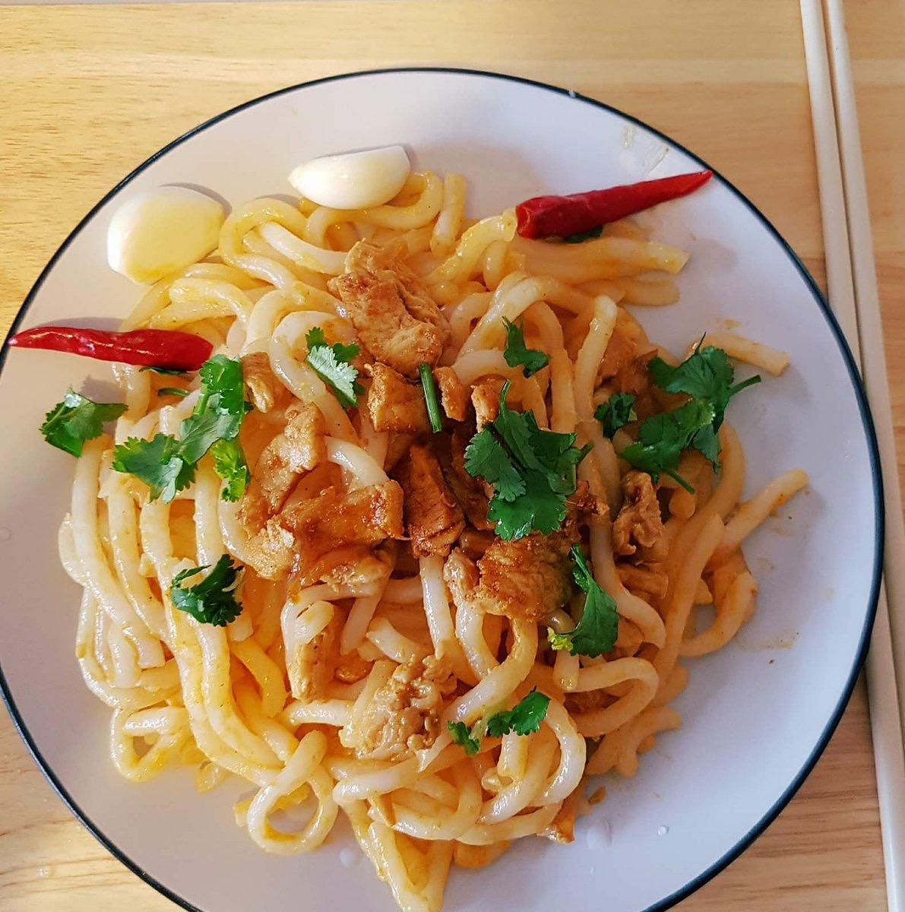
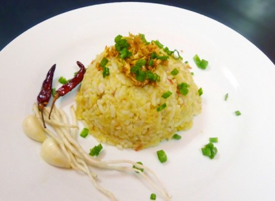
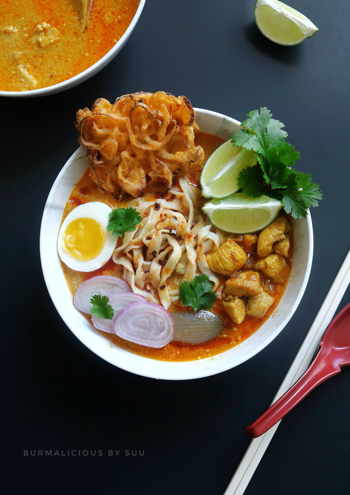
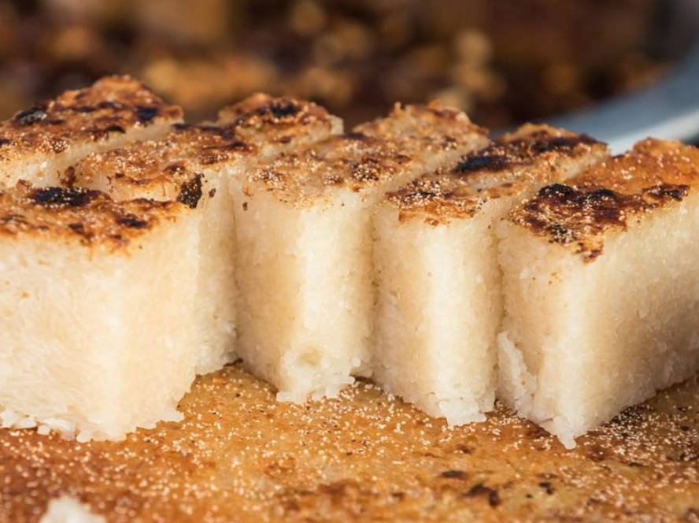
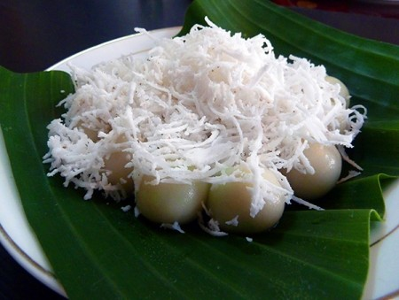

Mohinga

Ingredients
- 2 quarts fish broth
- 2 pounds whitefish catfish is commonly used in Burma
- 2 TBSPs coconut oil
- 1 large onion or 2 small-medium onions diced
- 4-6 garlic cloves diced
- 3-4 inch piece of ginger peeled and diced
- 2 stalks lemongrass top half (the thinner, green part) removed, bottom half cut into chunks
- 2 tsps turmeric
- 1 tsps roasted chile powder
- 1 cup chickpea flour (also called “fava” flour)
- Rice noodles cooked according to package directions
How to cook
- Cut the lemongrass stalks in half. Discard the upper green halves. Take the lower halves chop off the end, and peel away a few of the tough outer layers.
- Dice the stalk into 1 inch pieces.
- Dice the onion, garlic and ginger. Use a food processor, if needed. Heat coconut oil in a medium-sized stockpot over medium heat.
- Add the lemongrass, onion, garlic, and ginger and saute until fragrant and softented, about 5 minutes.
- Add turmeric and chili powder. Mix well and saute another minute or two.
- Add fish broth and bring to a boil. Reduce heat and bring to a simmer.
- Add chickpea flour and stir until mixed well. Simmer for 10-15 more minutes until slightly thickened.
- Prepare noodles according to package directions.
- Add rice noodles to individual bowls. Ladle soup over the noodles. Add seasonings, to taste.
Nan Gyi Thoke

Ingredients
For the salad
- Round rice noodle or Udon noodle (half a pack)
- Boiled egg (1 large egg)
- 2 teaspoons of fish sauce
- 1 stalk of coriander
- 1/3 of a lime or lemon
- 2 teaspoons of roasted peanut powder
- Half of a sliced onion (for garnishing)
For the chicken curry sauce
- One chicken breast (around 120 grams)
- 3 tablespoons of oil
- 1 teaspoon of fish sauce
- ½ teaspoon of turmeric powder
- 1 teaspoon of salt
- 1-2 teaspoons of red chili powder (for color)
- 2 pieces of shallots
- 5-6 gloves of garlic
- 2 pieces of Tomatoes
How to cook
Cooking the noodles
- Boil the noodles and add a little salt.
- Drain the noodles and put them under cold water.
- Then, sprinkle them with a little oil to prevent them from sticking.
Cooking the chicken
- Dice the chicken breasts into small cubes.
- Add cooking oil into a heated pan and put in the chopped shallots and garlic.
- When there is a nice aroma, put the diced chicken seasoned with salt and fish sauce.
- Add turmeric and red chili powder. Then, toss for a few times.
- Add the chopped tomatoes (without seeds) to the pan, add a little bit of chicken stock, and cook it for 3 to 4 minutes.
Serving Instructions
- Pour the chicken curry sauce over the noodles.
- Then, add slices of hard-boiled eggs, roasted peanut powder, and some coriander leaves.
- Finally, sprinkle lime and fish sauce on top.
Fish rice

Ingredients
- mrigal – 250 g (cut into large pieces
- 3 tomatoes, sliced
- 1 tbs fish sauce
- 2 large potatoes, boiled until tender
- 4 cups cooked rice
- 1 ts of salt
- 2 ts of chicken powder
- 1 ts of turmeric powder
- 5 cloves of garlic, chopped
- 4 tbs of vegetable oil
- fresh of spring onion, sliced
- 1 chive root
- 8 fried dried red chillies
How to cook
- Heat oil in a wok. Fry garlic until fragrant.
- Add half teaspoon of turmeric and stir well 30 seconds.
- Separate oil and fried garlic.
- Add mrigal, tomatoes, half teaspoon of turmeric, fish sauce and 2 cups of water to the pot and boil it until all tomatoes are crushed.
- Then remove the fishes from boiling pot, debone and skin, then flake flesh.
- Mix all the ingredients and make fish rice ball or fish rice cake by hand.
- Add a few spring onions and fried garlic. Serve with chive root, dried red chillies and garlic.
Shan Noodles

Ingredients
- 1 lb chicken (or pork), chopped
- 10 oz. dried Shan noodles (rice noodles)
- 2 onions , chopped
- 6 cloves garlic , chopped
- 1 (1-inch) piece ginger , peeled and chopped
- 8 tomatoes , chopped
- 1 tablespoon tomato paste
- 3 tablespoons soy sauce
- 2 tablespoons sugar
- 2 tablespoons chili powder (optional)
- 8 tablespoons peanuts , crushed
- 2 scallions , chopped (for garnishing)
- 6 tablespoons vegetable oil
How to cook
- Place the dried noodles in a large bowl of cold water.
- Bring a large pot of water to boil. Turn off the heat, and place the dried rice noodles.
- Heat oil in a large wok. Fry the onions, garlic and ginger for 6 to 8 minutes.
- Add chili powder and continue to stir fry for a minute.
- Add the chopped chicken (or pork), tomatoes, tomato paste, and stir well. Add soy sauce and sugar and cook over a medium heat for 15 minutes until all tomatoes are crushed.
- Put a handful of noodles into a bowl. Add 4 tablespoons of chicken curry, crushed peanuts and adjust with soy sauce to taste. Add a few spring onions. Serve immediately with pickled mustard greens (optional).
Coconut Milk Noodles

Ingredients
- ½pound chicken, boned, skinned and cut into ¾-inch cubes
- 1teaspoon fish sauce
- Sea salt
- ¼cup peanut oil
- ¼teaspoon turmeric
- 1small sweet onion, finely chopped
- 3cloves garlic, finely chopped
- ½teaspoon sweet paprika
- 201-inch cubes fish cake, deep-fried
- 5cups chicken broth
- ¼cup roasted chickpea flour
- ⅔cup coconut milk
- 13peeled shallot lobes, one of them finely sliced and soaked in water
- ¾pound boiled spaghetti-size egg noodles
- 2hard-boiled eggs, thinly sliced
- 2scallions, sliced
- Handful of deep-fried rice noodles
- 1lime, cut into wedges
- vRed chilies, roasted in a pan and then coarsely ground
How to cook
- Knead the chicken with the fish sauce and a pinch of salt and let rest for 10 minutes.
- Place a medium saucepan over medium-high heat and add the oil and turmeric. Scrape in the onions and sauté for a minute. Add the garlic and cook 1 more minute.
- Stir in the paprika, then the chicken, cooking until the chicken is blanched on the outside. Fold in the fish cakes and ½ cup water and simmer until most of the liquid is absorbed.
- In a large saucepan, bring the broth to a boil. Dissolve the chickpea flour in ½ cup water and pour into the broth, stirring until the mixture thickens slightly.
- Add the chicken to the broth, and stir in the coconut milk. Bring to a boil, then lower the heat. Add the shallot lobes and simmer until just cooked through. Season to taste.
- Garnish with sliced (drained) shallot, hard-boiled egg, scallions and fried noodles. Serve, passing lime wedges and roasted chilies.
Mynmar Traditional Desserts
Shwe Kyi

Ingredients
- 1 cup fine semolina
- 1 cup caster sugar
- 3 cups coconut cream
- 4 tablespoons clarified butter (or unsalted butter), melted
- 4 eggs
- 1 pinch of salt
- ½ teaspoon ground cardamom
- 2 tablespoons golden sesame seeds
How to make
- Preheat oven to 320F/160C.
- In a large nonstick saucepan, mix the semolina with the coconut cream by adding coconut cream one cup (250ml) at a time and stirring well while incorporating.
- Add the caster sugar and continue stirring.
- Bring to a boil over medium heat, stirring constantly.
- When the mixture begins to thicken, add the butter and mix well.
- Stop cooking when the dough pulls away from the sides of the pan. Add salt, ground cardamom and mix.
- Separate the whites from the egg yolks.
- Stir the yolks in the preparation, one by one, mixing well after adding each yolk.
- Beat the egg whites until stiff and gently incorporate them into the preparation.
- Pour into a baking pan lined with parchment paper and bake for 45 minutes in the preheated oven.
- Sprinkle with sesame seeds right out of the oven.
- Sanwin makin can be unmolded and eaten warm or cold. Cut into diamond shapes before serving.
Mont Lone Yay Paw

Ingredients
- Glutinous rice - 800g
- Rice - 200g
- Clean palm sugar - 400g
- A medium-sized coconut – 1
- Banana leaves - a few
How to make
- Cut the palm sugar into small piece. Take some mixture for a small ball and put a piece of palm sugar into it. Wrap it around with the mixture into a form of a ball.
- Boil water in a big pot. While the water is boiling. put the rice balls into it. The balls will to the bottom of the pot. But once its ready. the balls float on top of the water.
- Take out the floating balls with a rive and put on the banana leaves on the tray.
- Chill before serving for a while and put some coconut fibre and serve.
Kyaut Kyaw

Ingredients
- 2 1/2 cups water
- 2 teaspoons agar agar powder
- 1/2 cup sugar
- 1 cup coconut milk (canned or freshly pressed)
- A pinch of salt
How to make
- Combine water, sugar, agar agar, and salt in a medium pan. Stir well.
- Over medium heat, bring to a boil, making sure the agar and sugar dissolves completely.
- Add the coconut milk and let it boil for a full minute.
- Simmer for 2 more minutes, and if you take a spoonful, you should see coconut milk solids separate.
- Remove from heat and pour into moulds/pan.
- Let it set fully at room temperature.
- Once set, refrigerate for a few hours before serving. Serve cold.